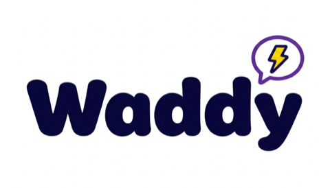

Waddy turns your CV into a resume and cover letter tailored to the exact job you're viewing on LinkedIn — in seconds, using the AI model of your choice.
Add to Chrome See how it worksGo to any job posting on LinkedIn. Waddy reads the role's title, company, and description.
Waddy tailors it to highlight what matters for that role and writes a matching cover letter with a match score.
Get your tailored resume (PDF) and cover letter, ready to send.
Stop rewriting your resume for every application — Waddy tailors it in seconds.
Role-specific resumes and cover letters help you stand out and get more responses.
Bring your own OpenRouter key and pick your preferred model — OpenAI, Anthropic, Google, and more.
Waddy has no server of its own. Your CV stays in your browser and is sent only to the AI provider you choose, with your own key.
Need help or found a bug? Email us and we'll get back to you:
cheha6@gmail.com
When reporting an issue, it helps to include the job page you were on, the AI model you selected, and what you expected to happen.